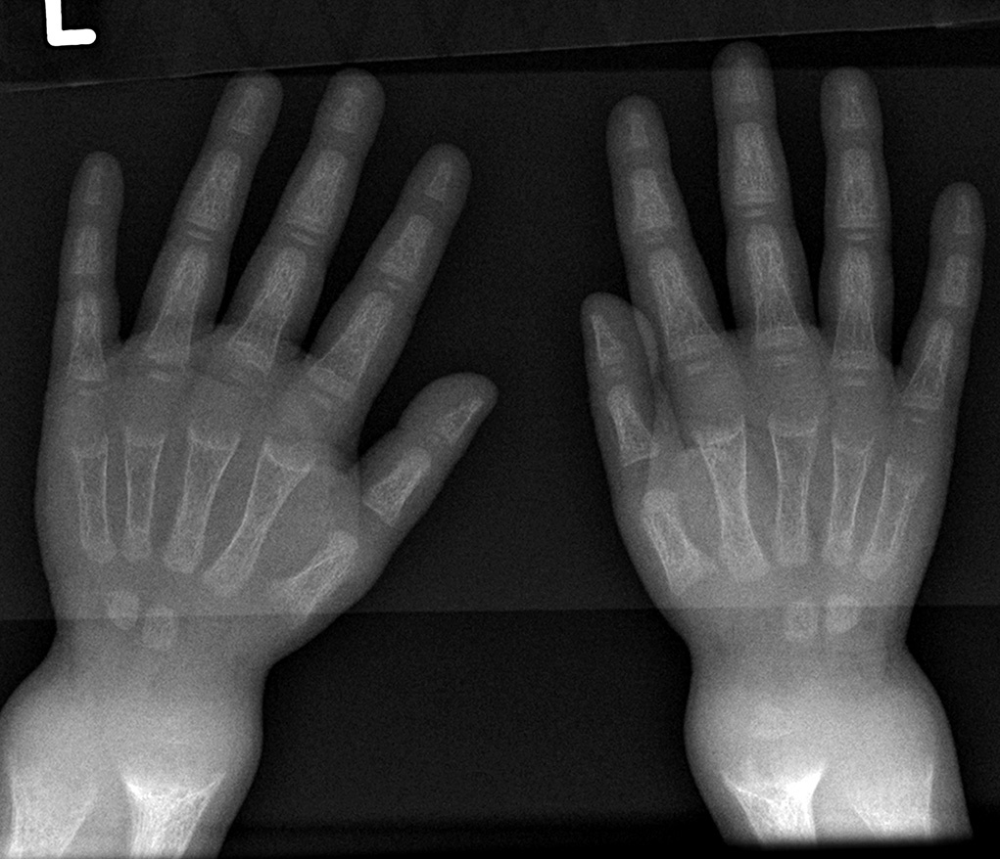

Ficha del catálogo
Raquitismo
- Sistema
- Óseo
- Modalidad
- RX
- Región
- Muñeca y rodilla
- Dificultad
- Intermedio
El raquitismo resulta de una mineralización defectuosa del hueso en crecimiento, casi siempre por déficit de vitamina D, y afecta de forma preferente a los cartílagos de crecimiento más activos. Los cambios se ven mejor en la muñeca y en la rodilla, donde la fisis crece con rapidez. Se acompaña de deformidad de los miembros, retraso del crecimiento y dolor. En el adulto el mismo trastorno se llama osteomalacia y se manifiesta con hueso poco denso y fracturas por insuficiencia.
Técnica
Radiografía anteroposterior de muñeca y de rodilla, que son las regiones más rentables. Se añaden proyecciones de miembros inferiores en carga para valorar la deformidad angular.
Qué observar
- Ensanchamiento de la fisis con pérdida de la línea de calcificación provisional
- Metáfisis deshilachadas y con bordes mal definidos
- Concavidad metafisaria en forma de copa
- Osteopenia difusa con trabéculas gruesas y mal definidas
- Deformidad en varo o valgo de los miembros inferiores
- Ensanchamiento de las uniones costocondrales en el tórax
Hallazgos
Fisis ensanchadas con metáfisis deshilachadas y excavadas, osteopenia generalizada y deformidad angular de los huesos largos.
Perlas
La rentabilidad del estudio depende de elegir la fisis adecuada, y por eso se estudian la muñeca y la rodilla, donde el crecimiento es más rápido y los cambios aparecen antes. En el seguimiento la reaparición de la línea de calcificación provisional es el primer signo de respuesta al tratamiento.
Diagnóstico diferencial
- Displasia metafisaria
- Alteración metafisaria sin osteopenia y con analítica normal.
- Lesiones metafisarias por maltrato infantil
- Fracturas en esquina localizadas, con densidad ósea conservada.
- Escorbuto
- Línea densa metafisaria con hemorragia subperióstica y osteopenia intensa.
Simuladores
- Fisis normal en fase de crecimiento rápido
- Artefacto de técnica blanda que simula osteopenia
- Variantes metafisarias irregulares del lactante
Por modalidad
- RX
- Método básico para el diagnóstico y para vigilar la respuesta
- US
- Se usa en el lactante para valorar caderas y otras estructuras, no para el diagnóstico
- RM
- Excepcional, puede mostrar el ensanchamiento fisario y el edema metafisario
Protocolo
Radiografía de muñeca y rodilla, ampliada a miembros inferiores en carga si hay deformidad. Control tras varias semanas de tratamiento para documentar la mineralización.
Clasificación
Se distinguen las formas carenciales por déficit de vitamina D de las formas ligadas a pérdida renal de fosfato y a alteraciones del metabolismo de la vitamina.
Errores frecuentes
- Estudiar una fisis poco activa y considerar normal el estudio
- Atribuir toda irregularidad metafisaria del lactante a raquitismo
- No correlacionar los hallazgos con la analítica de calcio, fósforo y fosfatasa alcalina

raquitismo vitamina d fisis metafisis deshilachada osteomalacia pediatrico metabolico